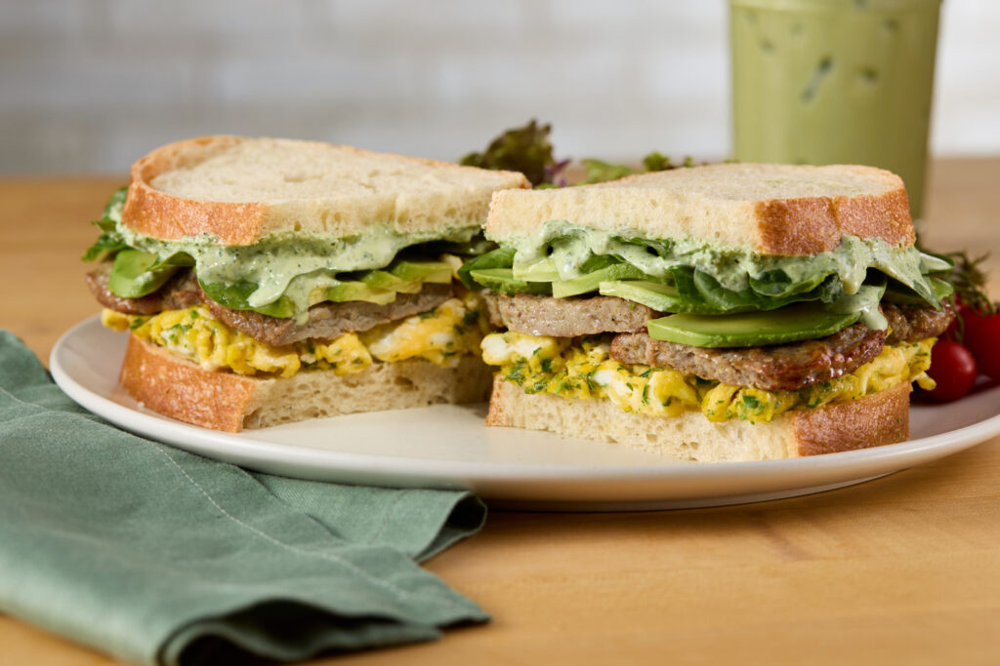

Back to home
Green Goddess Sandwich

Description
This green goddess sandwich is crunchy and delicious, packed with fresh green veggies, and dressed in a garlicky, lemony yogurt and green herb sauce.
Ingredients
- 1/2 cup chopped parsley
- 2 tablespoons chopped chives
- 1/2 teaspoon dried tarragon
- 1 anchovy filet
- 2 tablespoons toum (Lebanese garlic spread)
- 2 tablespoons whole milk plain Greek yogurt
- 1/2 teaspoon lemon juice
- salt and freshly ground black pepper, to taste
- 2 slices bread
- 1 leaf Romaine lettuce, torn in half
- 1 handful baby spinach leaves
- 2 slices tomato
- 4 slices cucumber, or as needed
Steps
- Place parsley, chives, tarragon, anchovy, toum, Greek yogurt, lemon juice, salt, and pepper into a small food processor or blender. Blend until smooth. Taste, and adjust salt and pepper as needed.
- Spread desired amount of dressing over the 2 bread slices. Top 1 slice with lettuce, spinach, tomato, cucumber, cheese, and avocado. Top with the other slice of bread. Serve immediately. Refrigerate any extra dressing in an airtight container.